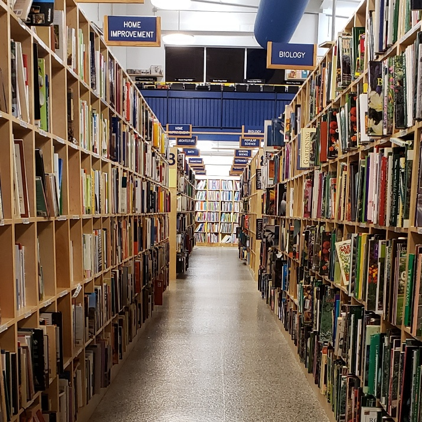
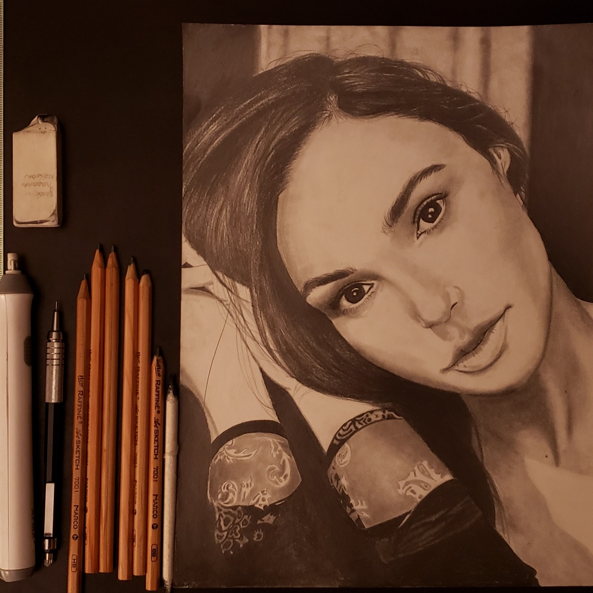
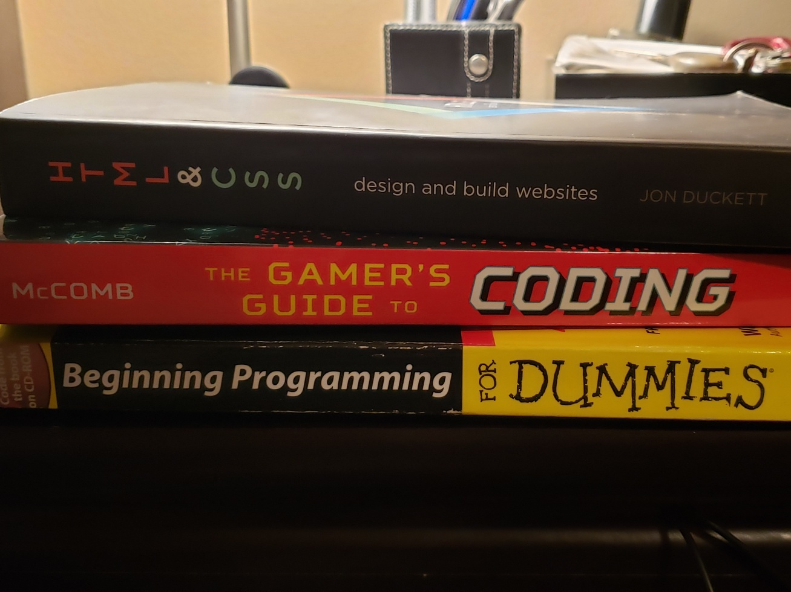

Interests
My interests are basically anything that has to do with art, activity, and mental stimulation! My personality is that of an introvert. I tend to be quiet, observant, and curious. I have found great interest in different forms of art and literature, and think that it has been a major influence on my life. A big interest of mine is drawing. I usually spend a good amount of time on my projects, and sometimes they turn out very well! Another Interest for me is reading. Though i don't read very often, I always find it an enojyable experience to be able to dive right into a book and let the imagination run wild! In addition, I love to travel. One of my favorite places to go is the mountains, where it's peaceful and captivating. Another place i love to travel to is the beach. Me and my family would always take a trip down to Florida for the summer to enjoy the sun and surf, so it holds a special place in my life!
Top favorites
This is one of my favorite bookstores in the Nashville area!
My best drawing to date is of the actress Gal Gadot and took roughly 12 hours to complete.

My reading material mostly consists of novels, but these days i'm more focused on learning coding!